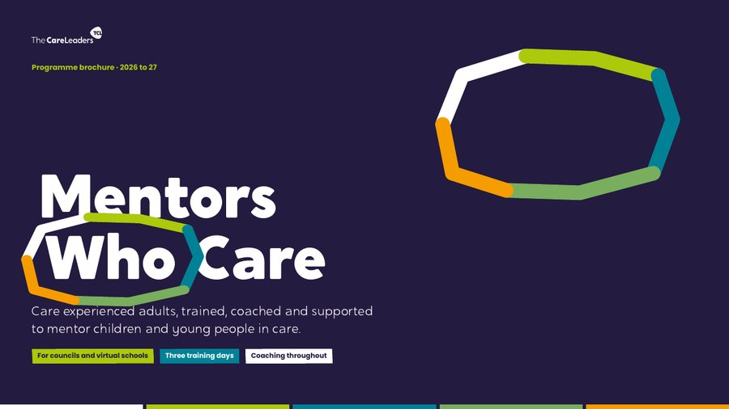

Peer mentoring for children in care, by care-experienced adultsMentorsWhoCareSomeone who has been there, alongside a child in care.
A mentoring scheme for your council or virtual school, where care-experienced adults mentor children in care. We design it with the people who will mentor, train them over three days, coach them as they start, and leave you with a scheme that keeps going after we step back.
MentorsWhoCare, in short
What we offer, what we do, what you get and what it is for.
The offer
A peer mentoring scheme for children in care, run by your council or virtual school and built around mentors who have been in care themselves.
What we do
We design the scheme with your prospective mentors, help you recruit, train mentors over three days, and coach them through readiness and their first matches.
What you get
The mentor training, the How to be a Mentor workbook, befriending and GROW guides, a readiness tracker, a recruitment campaign and an operating model.
What it achieves
Children in care with an adult alongside them who has been there and chose to be there, and mentors who are safe, supported and stay.
From care leaver to care leader.
Children in care meet a lot of adults who are paid to be there. A mentor who has also been in care, and has chosen to turn up, can reach a child in ways professionals often can’t. That only works if mentors are trained, safe and supported, and if the relationship lasts. Mentors Who Care sets that up properly, with care-experienced adults shaping the scheme from day one.
What Mentors Who Care sets out to do
Three objectives, for every scheme we build.
Relationships
Matches that are close, consistent and last, because that is what makes mentoring work for a child.
Safety
Mentors who know the boundaries, never promise secrecy and pass on a worry the same day.
Legacy
Mentors who grow into trainers, and an operating model your service owns, so the scheme carries on.
At a glance
Care-experienced adults mentoring children in care, trained and coached by people who have been there too.
- Who it’s forCouncils and virtual schools setting up or relaunching a mentoring scheme
- The mentorsCare-experienced adults aged 18 and over
- The childrenChildren in care of school age and post-16, at school, college or in a children’s home
- The trainingThree one-day sessions, about a month apart, face to face
- Between the daysOnline coaching and wellbeing groups, and a readiness check before any match
- How mentoring startsBefriending first, to build trust, then goal-setting with the GROW model when the child is ready
- The rolesMentor, Speaker or Advisor, so everyone has a way to contribute
- Yours to keepThe workbook, guides, readiness tracker, campaign and operating model
How it works
From the first design day to mentors meeting children, and beyond.
- 1
Design
Shape the scheme with the people who will mentor.
- Why they want to mentor and what they need
- Roles, referral, matching and recording agreed
- Safeguarding route and payments agreed with you
- 2
Recruit
Find care-experienced adults who want to give back.
- A 4 to 6 week recruitment campaign
- A role description and how to apply
- Safer recruitment checks run by your scheme
- 3
Train
Three days, about a month apart.
- Befriending and foundations
- GROW and the dynamics of mentoring
- Safeguarding, readiness and launch
- 4
Ready and matched
Mentors start when they are ready, not before.
- A readiness check before any match
- Coaching, never a test
- Another way to contribute for anyone not ready yet
- 5
Befriend, mentor, lead
Relationships first, then goals, then leadership.
- Befriending builds trust
- GROW mentoring builds goals
- Experienced mentors train the next cohort
How mentors are supported
Mentoring can bring a mentor’s own time in care back to the surface. Support runs from the first training day to long after the first match.
Coaching, not supervision
Every mentor has a coach. What coaching covers, how often and how to reach them is agreed with each mentor at the start.
Wellbeing groups
Online groups between the training days and once mentoring starts, so mentors can talk through what the role stirs up with people who get it.
A readiness check
No one is matched until they are ready. The check is a conversation, not a test, and not ready yet is a direction, not a rejection.
Another way to contribute
Mentors who are not ready to befriend a child can contribute as a Speaker or an Advisor, or through work with schools, while they build towards it.
A clear route for a worry
Mentors never carry a worry alone. They know exactly who to pass it to, and they pass it on the same day.
Support as matches start
We stay alongside mentors through their first weeks of befriending, then hand the coaching and groups over to your team.
Explore the programme
Choose a tab to see the training days and how mentors are supported.
What mentors learn
- 1Befriending and foundationsWhy you want to mentor, the adult who made a difference to you, and the steps of befriending a child
- 2Sharing your story safelyWhat’s mine, what I share with care, and what I share freely
- 3GROW and the dynamicsSetting goals with the GROW model, the pull to rescue, and staying well yourself
- 4Safeguarding, readiness and launchNever promising secrecy, passing on a worry the same day, boundaries and endings
Every part opens with a story from a child’s side, gives mentors the research that explains it and ends with something they practise in pairs. Mentors work from the How to be a Mentor workbook, which also works on its own as a course.
Day by day
Day 1: Befriending and foundations
The adult who made a difference to you, your values, and what a mentor is and is not.
The steps from referral to a first meeting with a trusted adult there, and a getting-to-know-you guide the child owns.
What’s mine to keep, what I share with care and what I share freely, always asking whether it helps the child.
Day 2: GROW and the dynamics
Goal, Reality, Options, Way forward, practised in pairs on a real-feeling goal.
The pull to rescue, a child testing you by going quiet, and noticing when the role stirs up your own memories.
Psychological safety, compassion fatigue, and Spot, Soothe, Shift for the moments a meeting gets hard.
Day 3: Safeguarding, readiness and launch
Listening without promising secrecy, writing it down in the child’s words and passing it on the same day.
Boundaries on messaging, gifts and meeting places, planning endings, and your readiness conversation.
Your first match, the coaching and wellbeing groups from here, and who to call when you need to.
From training to leading
- 1Foundation trainingThree days that give every mentor the same grounding
- 2Coaching and readinessOnline coaching and wellbeing groups, and a readiness check before any match
- 3BefriendingOne child per mentor, building trust before anything else
- 4GROW mentoringStructured goal-setting once the relationship is there
- 5Train the trainerExperienced mentors learn to train the next cohort
Mentors move at different speeds, and we say so from the start. Not ready yet is a direction, not a rejection: mentors can contribute as a Speaker or an Advisor, or through work with schools, while they build towards befriending.
What your service keeps
The How to be a Mentor workbook
Every training activity mapped, for use in the sessions or on its own.
Befriending and GROW guides
Step-by-step guides mentors use with a child, with session templates and reflective tools.
A readiness tracker
A competency framework and tracker, so every mentor is ready before they are matched.
Coaching and wellbeing routines
Contracting, coaching prompts and a clear route for passing on a worry.
A recruitment campaign
A 4 to 6 week campaign and marketing toolkit to find your mentors.
An operating model
Referral, matching, recording and outcomes, set up for your service to run.
Previous work
Mentors Who Care comes from the scheme we are building with Norfolk Virtual School, and from years of work alongside care-experienced people.

Home and Future: Youth Participation Collective
A regional network of participation workers and young people, named and branded by the young people in it, with a Shadow Board designed for the region.
Read the case study
Buckinghamshire Council: Youth Voice Bucks
A participation service young people named, branded and shaped. 19 champions from 11 service areas.
Read the case studyQuestions commissioners ask
Who is it for?
Councils and virtual schools that want care-experienced adults to mentor children in care, whether you are starting a scheme or relaunching one.
Do mentors need to have been in care?
Yes. The scheme is built on shared experience. Staff who will coach and support mentors can join the training, so they know what mentors have learned.
Are mentors paid?
That is your decision, and we help you make it. Schemes often start with mentors as volunteers, with expenses and rewards such as vouchers or courses, and we can model the cost of paying mentors.
What checks do mentors need?
Your scheme carries out safer recruitment checks before mentors meet children, normally including an enhanced DBS check. The training prepares mentors to work within your safeguarding procedures.
What if the training brings up difficult memories?
It is built with this in mind. Nobody shares more than they choose, wellbeing groups run between the days, and every mentor has coaching and a plan for staying well.
What happens if someone is not ready?
They are not turned away. Readiness is a direction, not a rejection: they can contribute as a Speaker or an Advisor, or through work with schools, and come back to mentoring when they are ready.
How long does it take?
The three training days run about a month apart, so mentors can try things and bring questions back. We agree the full timeline with you, from the design day to mentors meeting children.
How is it priced?
Every scheme is different, so we quote for your number of mentors and how much of the set-up you want us to do. Tell us about your plans and we’ll come back to you within 3 working days.
Download the Mentors Who Care brochure
How the programme works, the three training days, how mentors are supported and what your service keeps, in one PDF to share with colleagues.
Thank you. Your brochure is downloading.
If it didn’t start, open the brochure here.

Talk to us about Mentors Who Care
Tell us about your service and what you need, and we’ll reply within 3 working days.